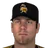
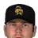
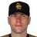
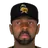
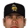
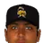
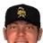
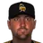

Franchise record book · ABL
Salt Lake Bees
Seasons covered: 2002–2002. Only games played for this franchise count.
This club has no pre-2002 history in the export, so its record book is the 2002 season to date. Rate records need 3.1 PA or 1 inning per team game.
Home runs
| # | Player | Season | Team | Home runs |
|---|---|---|---|---|
| #1 |  Brad Fullmer • | 2002 (ABL) |  Salt Lake Bees Salt Lake Bees | 11 |
| #2 | 2002 (ABL) | Salt Lake Bees | 7 | |
| #3 | Val Pascucci • | 2002 (ABL) | Salt Lake Bees | 7 |
| #4 | 2002 (ABL) | Salt Lake Bees | 5 | |
| #5 | 2002 (ABL) | Salt Lake Bees | 5 | |
| #6 |  A.J. Pierzynski • | 2002 (ABL) | Salt Lake Bees | 3 |
| #7 | 2002 (ABL) | Salt Lake Bees | 2 | |
| #8 | 2002 (ABL) | Salt Lake Bees | 1 | |
| #9 | 2002 (ABL) | Salt Lake Bees | 1 | |
| #10 | 2002 (ABL) | Salt Lake Bees | 0 |
Hits
| # | Player | Season | Team | Hits |
|---|---|---|---|---|
| #1 | 2002 (ABL) | Salt Lake Bees | 59 | |
| #2 | 2002 (ABL) | Salt Lake Bees | 58 | |
| #3 | Brad Fullmer • | 2002 (ABL) | Salt Lake Bees | 57 |
| #4 | 2002 (ABL) | Salt Lake Bees | 47 | |
| #5 | 2002 (ABL) | Salt Lake Bees | 44 | |
| #6 | A.J. Pierzynski • | 2002 (ABL) | Salt Lake Bees | 40 |
| #7 | Val Pascucci • | 2002 (ABL) | Salt Lake Bees | 37 |
| #8 | 2002 (ABL) | Salt Lake Bees | 32 | |
| #9 | 2002 (ABL) | Salt Lake Bees | 29 | |
| #10 |  Clint Barmes • | 2002 (ABL) | Salt Lake Bees | 16 |
RBI
| # | Player | Season | Team | RBI |
|---|---|---|---|---|
| #1 | Brad Fullmer • | 2002 (ABL) | Salt Lake Bees | 38 |
| #2 | 2002 (ABL) | Salt Lake Bees | 32 | |
| #3 | 2002 (ABL) | Salt Lake Bees | 26 | |
| #4 | Val Pascucci • | 2002 (ABL) | Salt Lake Bees | 26 |
| #5 | 2002 (ABL) | Salt Lake Bees | 22 | |
| #6 | A.J. Pierzynski • | 2002 (ABL) | Salt Lake Bees | 22 |
| #7 | 2002 (ABL) | Salt Lake Bees | 19 | |
| #8 | 2002 (ABL) | Salt Lake Bees | 13 | |
| #9 | 2002 (ABL) | Salt Lake Bees | 10 | |
| #10 | Clint Barmes • | 2002 (ABL) | Salt Lake Bees | 8 |
Runs
| # | Player | Season | Team | Runs |
|---|---|---|---|---|
| #1 | 2002 (ABL) | Salt Lake Bees | 35 | |
| #2 | Brad Fullmer • | 2002 (ABL) | Salt Lake Bees | 35 |
| #3 | 2002 (ABL) | Salt Lake Bees | 30 | |
| #4 | 2002 (ABL) | Salt Lake Bees | 22 | |
| #5 | 2002 (ABL) | Salt Lake Bees | 19 | |
| #6 | Val Pascucci • | 2002 (ABL) | Salt Lake Bees | 19 |
| #7 | 2002 (ABL) | Salt Lake Bees | 18 | |
| #8 | 2002 (ABL) | Salt Lake Bees | 13 | |
| #9 | A.J. Pierzynski • | 2002 (ABL) | Salt Lake Bees | 13 |
| #10 | Clint Barmes • | 2002 (ABL) | Salt Lake Bees | 11 |
Stolen bases
| # | Player | Season | Team | Stolen bases |
|---|---|---|---|---|
| #1 |  Nook Logan • | 2002 (ABL) | Salt Lake Bees | 5 |
| #2 | 2002 (ABL) | Salt Lake Bees | 4 | |
| #3 | 2002 (ABL) | Salt Lake Bees | 3 | |
| #4 | Brad Fullmer • | 2002 (ABL) | Salt Lake Bees | 3 |
| #5 | 2002 (ABL) | Salt Lake Bees | 3 | |
| #6 | Val Pascucci • | 2002 (ABL) | Salt Lake Bees | 3 |
| #7 | 2002 (ABL) | Salt Lake Bees | 2 | |
| #8 | 2002 (ABL) | Salt Lake Bees | 1 | |
| #9 | A.J. Pierzynski • | 2002 (ABL) | Salt Lake Bees | 1 |
| #10 | 2002 (ABL) | Salt Lake Bees | 1 |
Doubles
| # | Player | Season | Team | Doubles |
|---|---|---|---|---|
| #1 | A.J. Pierzynski • | 2002 (ABL) | Salt Lake Bees | 14 |
| #2 | 2002 (ABL) | Salt Lake Bees | 11 | |
| #3 | 2002 (ABL) | Salt Lake Bees | 10 | |
| #4 | 2002 (ABL) | Salt Lake Bees | 10 | |
| #5 | 2002 (ABL) | Salt Lake Bees | 8 | |
| #6 | 2002 (ABL) | Salt Lake Bees | 7 | |
| #7 | Val Pascucci • | 2002 (ABL) | Salt Lake Bees | 7 |
| #8 | 2002 (ABL) | Salt Lake Bees | 7 | |
| #9 | Brad Fullmer • | 2002 (ABL) | Salt Lake Bees | 5 |
| #10 | Clint Barmes • | 2002 (ABL) | Salt Lake Bees | 3 |
Triples
| # | Player | Season | Team | Triples |
|---|---|---|---|---|
| #1 | 2002 (ABL) | Salt Lake Bees | 3 | |
| #2 | Brad Fullmer • | 2002 (ABL) | Salt Lake Bees | 3 |
| #3 | 2002 (ABL) | Salt Lake Bees | 3 | |
| #4 | 2002 (ABL) | Salt Lake Bees | 2 | |
| #5 | 2002 (ABL) | Salt Lake Bees | 1 | |
| #6 | 2002 (ABL) | Salt Lake Bees | 1 | |
| #7 | Nook Logan • | 2002 (ABL) | Salt Lake Bees | 1 |
| #8 | Val Pascucci • | 2002 (ABL) | Salt Lake Bees | 1 |
| #9 | 2002 (ABL) | Salt Lake Bees | 0 | |
| #10 | 2002 (ABL) | Salt Lake Bees | 0 |
Walks
| # | Player | Season | Team | Walks |
|---|---|---|---|---|
| #1 | 2002 (ABL) | Salt Lake Bees | 21 | |
| #2 | 2002 (ABL) | Salt Lake Bees | 18 | |
| #3 | Brad Fullmer • | 2002 (ABL) | Salt Lake Bees | 17 |
| #4 | 2002 (ABL) | Salt Lake Bees | 15 | |
| #5 | 2002 (ABL) | Salt Lake Bees | 14 | |
| #6 | 2002 (ABL) | Salt Lake Bees | 13 | |
| #7 | Val Pascucci • | 2002 (ABL) | Salt Lake Bees | 13 |
| #8 | 2002 (ABL) | Salt Lake Bees | 12 | |
| #9 | 2002 (ABL) | Salt Lake Bees | 7 | |
| #10 | Clint Barmes • | 2002 (ABL) | Salt Lake Bees | 3 |
Total bases
| # | Player | Season | Team | Total bases |
|---|---|---|---|---|
| #1 | Brad Fullmer • | 2002 (ABL) | Salt Lake Bees | 101 |
| #2 | 2002 (ABL) | Salt Lake Bees | 91 | |
| #3 | 2002 (ABL) | Salt Lake Bees | 84 | |
| #4 | 2002 (ABL) | Salt Lake Bees | 71 | |
| #5 | 2002 (ABL) | Salt Lake Bees | 69 | |
| #6 | Val Pascucci • | 2002 (ABL) | Salt Lake Bees | 67 |
| #7 | A.J. Pierzynski • | 2002 (ABL) | Salt Lake Bees | 63 |
| #8 | 2002 (ABL) | Salt Lake Bees | 49 | |
| #9 | 2002 (ABL) | Salt Lake Bees | 41 | |
| #10 | Clint Barmes • | 2002 (ABL) | Salt Lake Bees | 19 |
Batting average qualified
| # | Player | Season | Team | Batting average |
|---|---|---|---|---|
| #1 | Brad Fullmer • | 2002 (ABL) | Salt Lake Bees | .380 |
| #2 | 2002 (ABL) | Salt Lake Bees | .371 | |
| #3 | 2002 (ABL) | Salt Lake Bees | .362 | |
| #4 | 2002 (ABL) | Salt Lake Bees | .324 | |
| #5 | 2002 (ABL) | Salt Lake Bees | .315 | |
| #6 | A.J. Pierzynski • | 2002 (ABL) | Salt Lake Bees | .282 |
| #7 | Val Pascucci • | 2002 (ABL) | Salt Lake Bees | .257 |
| #8 | 2002 (ABL) | Salt Lake Bees | .248 | |
| #9 | 2002 (ABL) | Salt Lake Bees | .220 |
On-base % qualified
| # | Player | Season | Team | On-base % |
|---|---|---|---|---|
| #1 | Brad Fullmer • | 2002 (ABL) | Salt Lake Bees | .457 |
| #2 | 2002 (ABL) | Salt Lake Bees | .457 | |
| #3 | 2002 (ABL) | Salt Lake Bees | .411 | |
| #4 | 2002 (ABL) | Salt Lake Bees | .392 | |
| #5 | 2002 (ABL) | Salt Lake Bees | .371 | |
| #6 | 2002 (ABL) | Salt Lake Bees | .336 | |
| #7 | Val Pascucci • | 2002 (ABL) | Salt Lake Bees | .323 |
| #8 | 2002 (ABL) | Salt Lake Bees | .304 | |
| #9 | A.J. Pierzynski • | 2002 (ABL) | Salt Lake Bees | .290 |
Slugging % qualified
| # | Player | Season | Team | Slugging % |
|---|---|---|---|---|
| #1 | Brad Fullmer • | 2002 (ABL) | Salt Lake Bees | .673 |
| #2 | 2002 (ABL) | Salt Lake Bees | .572 | |
| #3 | 2002 (ABL) | Salt Lake Bees | .564 | |
| #4 | 2002 (ABL) | Salt Lake Bees | .522 | |
| #5 | Val Pascucci • | 2002 (ABL) | Salt Lake Bees | .465 |
| #6 | A.J. Pierzynski • | 2002 (ABL) | Salt Lake Bees | .444 |
| #7 | 2002 (ABL) | Salt Lake Bees | .431 | |
| #8 | 2002 (ABL) | Salt Lake Bees | .380 | |
| #9 | 2002 (ABL) | Salt Lake Bees | .311 |
OPS qualified
| # | Player | Season | Team | OPS |
|---|---|---|---|---|
| #1 | Brad Fullmer • | 2002 (ABL) | Salt Lake Bees | 1.130 |
| #2 | 2002 (ABL) | Salt Lake Bees | 1.029 | |
| #3 | 2002 (ABL) | Salt Lake Bees | .956 | |
| #4 | 2002 (ABL) | Salt Lake Bees | .893 | |
| #5 | 2002 (ABL) | Salt Lake Bees | .843 | |
| #6 | Val Pascucci • | 2002 (ABL) | Salt Lake Bees | .788 |
| #7 | A.J. Pierzynski • | 2002 (ABL) | Salt Lake Bees | .733 |
| #8 | 2002 (ABL) | Salt Lake Bees | .715 | |
| #9 | 2002 (ABL) | Salt Lake Bees | .615 |
WAR (OOTP)
| # | Player | Season | Team | WAR (OOTP) |
|---|---|---|---|---|
| #1 | 2002 (ABL) | Salt Lake Bees | 1.4 | |
| #2 | Brad Fullmer • | 2002 (ABL) | Salt Lake Bees | 1.2 |
| #3 | 2002 (ABL) | Salt Lake Bees | 1.2 | |
| #4 | 2002 (ABL) | Salt Lake Bees | 0.4 | |
| #5 | Clint Barmes • | 2002 (ABL) | Salt Lake Bees | 0.3 |
| #6 | 2002 (ABL) | Salt Lake Bees | 0.3 | |
| #7 | 2002 (ABL) | Salt Lake Bees | 0.2 | |
| #8 | Joe Dillon • | 2002 (ABL) | Salt Lake Bees | 0.0 |
| #9 | 2002 (ABL) | Salt Lake Bees | -0.1 | |
| #10 | Kurt Bierek • | 2002 (ABL) | Salt Lake Bees | -0.1 |
Wins
| # | Player | Season | Team | Wins |
|---|---|---|---|---|
| #1 | 2002 (ABL) | Salt Lake Bees | 5 | |
| #2 |  Troy Brohawn • | 2002 (ABL) | Salt Lake Bees | 3 |
| #3 | 2002 (ABL) | Salt Lake Bees | 2 | |
| #4 |  Ramiro Mendoza • | 2002 (ABL) | Salt Lake Bees | 2 |
| #5 | 2002 (ABL) | Salt Lake Bees | 2 | |
| #6 |  John Patterson • | 2002 (ABL) | Salt Lake Bees | 2 |
| #7 | 2002 (ABL) | Salt Lake Bees | 1 | |
| #8 | 2002 (ABL) | Salt Lake Bees | 1 | |
| #9 | Dan Wright • | 2002 (ABL) | Salt Lake Bees | 1 |
| #10 | 2002 (ABL) | Salt Lake Bees | 1 |
Strikeouts
| # | Player | Season | Team | Strikeouts |
|---|---|---|---|---|
| #1 | John Patterson • | 2002 (ABL) | Salt Lake Bees | 51 |
| #2 | Dan Wright • | 2002 (ABL) | Salt Lake Bees | 26 |
| #3 | 2002 (ABL) | Salt Lake Bees | 25 | |
| #4 | 2002 (ABL) | Salt Lake Bees | 24 | |
| #5 | Troy Brohawn • | 2002 (ABL) | Salt Lake Bees | 23 |
| #6 | 2002 (ABL) | Salt Lake Bees | 21 | |
| #7 | 2002 (ABL) | Salt Lake Bees | 14 | |
| #8 | 2002 (ABL) | Salt Lake Bees | 13 | |
| #9 | 2002 (ABL) | Salt Lake Bees | 12 | |
| #10 | 2002 (ABL) | Salt Lake Bees | 12 |
Saves
| # | Player | Season | Team | Saves |
|---|---|---|---|---|
| #1 | Ramiro Mendoza • | 2002 (ABL) | Salt Lake Bees | 8 |
| #2 |  Jeff Wallace • | 2002 (ABL) | Salt Lake Bees | 1 |
| #3 | 2002 (ABL) | Salt Lake Bees | 1 | |
| #4 | 2002 (ABL) | Salt Lake Bees | 1 | |
| #5 | 2002 (ABL) | Salt Lake Bees | 0 | |
| #6 | 2002 (ABL) | Salt Lake Bees | 0 | |
| #7 | 2002 (ABL) | Salt Lake Bees | 0 | |
| #8 | 2002 (ABL) | Salt Lake Bees | 0 | |
| #9 | John Patterson • | 2002 (ABL) | Salt Lake Bees | 0 |
| #10 | 2002 (ABL) | Salt Lake Bees | 0 |
Innings
| # | Player | Season | Team | Innings |
|---|---|---|---|---|
| #1 | John Patterson • | 2002 (ABL) | Salt Lake Bees | 50.1 |
| #2 | 2002 (ABL) | Salt Lake Bees | 46.1 | |
| #3 | Dan Wright • | 2002 (ABL) | Salt Lake Bees | 38.2 |
| #4 | 2002 (ABL) | Salt Lake Bees | 37.1 | |
| #5 | 2002 (ABL) | Salt Lake Bees | 28.1 | |
| #6 | Troy Brohawn • | 2002 (ABL) | Salt Lake Bees | 26.0 |
| #7 | 2002 (ABL) | Salt Lake Bees | 25.0 | |
| #8 | 2002 (ABL) | Salt Lake Bees | 24.1 | |
| #9 | 2002 (ABL) | Salt Lake Bees | 23.1 | |
| #10 | Ramiro Mendoza • | 2002 (ABL) | Salt Lake Bees | 15.0 |
Complete games
| # | Player | Season | Team | Complete games |
|---|---|---|---|---|
| #1 | Dan Wright • | 2002 (ABL) | Salt Lake Bees | 1 |
| #2 | 2002 (ABL) | Salt Lake Bees | 0 | |
| #3 | 2002 (ABL) | Salt Lake Bees | 0 | |
| #4 | Ramiro Mendoza • | 2002 (ABL) | Salt Lake Bees | 0 |
| #5 | 2002 (ABL) | Salt Lake Bees | 0 | |
| #6 | 2002 (ABL) | Salt Lake Bees | 0 | |
| #7 | Jeff Wallace • | 2002 (ABL) | Salt Lake Bees | 0 |
| #8 | John Patterson • | 2002 (ABL) | Salt Lake Bees | 0 |
| #9 | 2002 (ABL) | Salt Lake Bees | 0 | |
| #10 | 2002 (ABL) | Salt Lake Bees | 0 |
Shutouts
| # | Player | Season | Team | Shutouts |
|---|---|---|---|---|
| #1 | 2002 (ABL) | Salt Lake Bees | 0 | |
| #2 | 2002 (ABL) | Salt Lake Bees | 0 | |
| #3 | Ramiro Mendoza • | 2002 (ABL) | Salt Lake Bees | 0 |
| #4 | 2002 (ABL) | Salt Lake Bees | 0 | |
| #5 | 2002 (ABL) | Salt Lake Bees | 0 | |
| #6 | Jeff Wallace • | 2002 (ABL) | Salt Lake Bees | 0 |
| #7 | John Patterson • | 2002 (ABL) | Salt Lake Bees | 0 |
| #8 | 2002 (ABL) | Salt Lake Bees | 0 | |
| #9 | 2002 (ABL) | Salt Lake Bees | 0 | |
| #10 | Troy Brohawn • | 2002 (ABL) | Salt Lake Bees | 0 |
ERA qualified
| # | Player | Season | Team | ERA |
|---|---|---|---|---|
| #1 | John Patterson • | 2002 (ABL) | Salt Lake Bees | 6.97 |
| #2 | 2002 (ABL) | Salt Lake Bees | 7.38 |
WHIP qualified
| # | Player | Season | Team | WHIP |
|---|---|---|---|---|
| #1 | 2002 (ABL) | Salt Lake Bees | 1.73 | |
| #2 | John Patterson • | 2002 (ABL) | Salt Lake Bees | 1.93 |
K/9 qualified
| # | Player | Season | Team | K/9 |
|---|---|---|---|---|
| #1 | John Patterson • | 2002 (ABL) | Salt Lake Bees | 9.1 |
| #2 | 2002 (ABL) | Salt Lake Bees | 4.7 |
WAR (OOTP)
| # | Player | Season | Team | WAR (OOTP) |
|---|---|---|---|---|
| #1 | John Patterson • | 2002 (ABL) | Salt Lake Bees | 0.7 |
| #2 | Ramiro Mendoza • | 2002 (ABL) | Salt Lake Bees | 0.6 |
| #3 | 2002 (ABL) | Salt Lake Bees | 0.5 | |
| #4 | Dan Wright • | 2002 (ABL) | Salt Lake Bees | 0.4 |
| #5 | 2002 (ABL) | Salt Lake Bees | 0.4 | |
| #6 | 2002 (ABL) | Salt Lake Bees | 0.3 | |
| #7 | 2002 (ABL) | Salt Lake Bees | 0.3 | |
| #8 | 2002 (ABL) | Salt Lake Bees | 0.2 | |
| #9 | 2002 (ABL) | Salt Lake Bees | 0.2 | |
| #10 | 2002 (ABL) | Salt Lake Bees | 0.1 |
Home runs
| # | Player | Years | Home runs |
|---|---|---|---|
| #1 | Brad Fullmer • | 1997–02 | 11 |
| #2 | 1996–02 | 7 | |
| #3 | Val Pascucci • | 2002–02 | 7 |
| #4 | 2001–02 | 5 | |
| #5 | 1996–02 | 5 | |
| #6 | A.J. Pierzynski • | 1998–02 | 3 |
| #7 | 2002–02 | 2 | |
| #8 | 2001–02 | 1 | |
| #9 | 1992–02 | 1 | |
| #10 | 1999–02 | 0 |
Hits
| # | Player | Years | Hits |
|---|---|---|---|
| #1 | 2001–02 | 59 | |
| #2 | 2001–02 | 58 | |
| #3 | Brad Fullmer • | 1997–02 | 57 |
| #4 | 1996–02 | 47 | |
| #5 | 1996–02 | 44 | |
| #6 | A.J. Pierzynski • | 1998–02 | 40 |
| #7 | Val Pascucci • | 2002–02 | 37 |
| #8 | 2002–02 | 32 | |
| #9 | 1992–02 | 29 | |
| #10 | Clint Barmes • | 2002–02 | 16 |
RBI
| # | Player | Years | RBI |
|---|---|---|---|
| #1 | Brad Fullmer • | 1997–02 | 38 |
| #2 | 1996–02 | 32 | |
| #3 | 2001–02 | 26 | |
| #4 | Val Pascucci • | 2002–02 | 26 |
| #5 | 2001–02 | 22 | |
| #6 | A.J. Pierzynski • | 1998–02 | 22 |
| #7 | 1996–02 | 19 | |
| #8 | 2002–02 | 13 | |
| #9 | 1992–02 | 10 | |
| #10 | Clint Barmes • | 2002–02 | 8 |
Runs
| # | Player | Years | Runs |
|---|---|---|---|
| #1 | 2001–02 | 35 | |
| #2 | Brad Fullmer • | 1997–02 | 35 |
| #3 | 1996–02 | 30 | |
| #4 | 2001–02 | 22 | |
| #5 | 1996–02 | 19 | |
| #6 | Val Pascucci • | 2002–02 | 19 |
| #7 | 2002–02 | 18 | |
| #8 | 1992–02 | 13 | |
| #9 | A.J. Pierzynski • | 1998–02 | 13 |
| #10 | Clint Barmes • | 2002–02 | 11 |
Stolen bases
| # | Player | Years | Stolen bases |
|---|---|---|---|
| #1 | Nook Logan • | 2002–02 | 5 |
| #2 | 2001–02 | 4 | |
| #3 | 2001–02 | 3 | |
| #4 | Brad Fullmer • | 1997–02 | 3 |
| #5 | 1996–02 | 3 | |
| #6 | Val Pascucci • | 2002–02 | 3 |
| #7 | 2002–02 | 2 | |
| #8 | 1999–02 | 1 | |
| #9 | A.J. Pierzynski • | 1998–02 | 1 |
| #10 | 1996–02 | 1 |
Doubles
| # | Player | Years | Doubles |
|---|---|---|---|
| #1 | A.J. Pierzynski • | 1998–02 | 14 |
| #2 | 2001–02 | 11 | |
| #3 | 1996–02 | 10 | |
| #4 | 1996–02 | 10 | |
| #5 | 2001–02 | 8 | |
| #6 | 1992–02 | 7 | |
| #7 | Val Pascucci • | 2002–02 | 7 |
| #8 | 2002–02 | 7 | |
| #9 | Brad Fullmer • | 1997–02 | 5 |
| #10 | Clint Barmes • | 2002–02 | 3 |
Triples
| # | Player | Years | Triples |
|---|---|---|---|
| #1 | 2001–02 | 3 | |
| #2 | Brad Fullmer • | 1997–02 | 3 |
| #3 | 1996–02 | 3 | |
| #4 | 2002–02 | 2 | |
| #5 | 1992–02 | 1 | |
| #6 | 1996–02 | 1 | |
| #7 | Nook Logan • | 2002–02 | 1 |
| #8 | Val Pascucci • | 2002–02 | 1 |
| #9 | 2001–02 | 0 | |
| #10 | 1999–02 | 0 |
Walks
| # | Player | Years | Walks |
|---|---|---|---|
| #1 | 2001–02 | 21 | |
| #2 | 1996–02 | 18 | |
| #3 | Brad Fullmer • | 1997–02 | 17 |
| #4 | 2002–02 | 15 | |
| #5 | 2001–02 | 14 | |
| #6 | 1992–02 | 13 | |
| #7 | Val Pascucci • | 2002–02 | 13 |
| #8 | 1996–02 | 12 | |
| #9 | 1999–02 | 7 | |
| #10 | Clint Barmes • | 2002–02 | 3 |
Total bases
| # | Player | Years | Total bases |
|---|---|---|---|
| #1 | Brad Fullmer • | 1997–02 | 101 |
| #2 | 2001–02 | 91 | |
| #3 | 1996–02 | 84 | |
| #4 | 1996–02 | 71 | |
| #5 | 2001–02 | 69 | |
| #6 | Val Pascucci • | 2002–02 | 67 |
| #7 | A.J. Pierzynski • | 1998–02 | 63 |
| #8 | 2002–02 | 49 | |
| #9 | 1992–02 | 41 | |
| #10 | Clint Barmes • | 2002–02 | 19 |
Batting average min 2,000 PA
| # | Player | Years | Batting average |
|---|
On-base % min 2,000 PA
| # | Player | Years | On-base % |
|---|
Slugging % min 2,000 PA
| # | Player | Years | Slugging % |
|---|
OPS min 2,000 PA
| # | Player | Years | OPS |
|---|
WAR (OOTP)
| # | Player | Years | WAR (OOTP) |
|---|---|---|---|
| #1 | 2001–02 | 1.4 | |
| #2 | Brad Fullmer • | 1997–02 | 1.2 |
| #3 | 1996–02 | 1.2 | |
| #4 | 1996–02 | 0.4 | |
| #5 | Clint Barmes • | 2002–02 | 0.3 |
| #6 | 2001–02 | 0.3 | |
| #7 | 1999–02 | 0.2 | |
| #8 | Joe Dillon • | 2002–02 | 0.0 |
| #9 | 1992–02 | -0.1 | |
| #10 | Kurt Bierek • | 2002–02 | -0.1 |
Wins
| # | Player | Years | Wins |
|---|---|---|---|
| #1 | 2002–02 | 5 | |
| #2 | Troy Brohawn • | 2001–02 | 3 |
| #3 | 1999–02 | 2 | |
| #4 | Ramiro Mendoza • | 1996–02 | 2 |
| #5 | 2002–02 | 2 | |
| #6 | John Patterson • | 2002–02 | 2 |
| #7 | 1995–02 | 1 | |
| #8 | 2002–02 | 1 | |
| #9 | Dan Wright • | 2001–02 | 1 |
| #10 | 1991–02 | 1 |
Strikeouts
| # | Player | Years | Strikeouts |
|---|---|---|---|
| #1 | John Patterson • | 2002–02 | 51 |
| #2 | Dan Wright • | 2001–02 | 26 |
| #3 | 2002–02 | 25 | |
| #4 | 2002–02 | 24 | |
| #5 | Troy Brohawn • | 2001–02 | 23 |
| #6 | 1999–02 | 21 | |
| #7 | 1988–02 | 14 | |
| #8 | 2002–02 | 13 | |
| #9 | 2002–02 | 12 | |
| #10 | 1991–02 | 12 |
Saves
| # | Player | Years | Saves |
|---|---|---|---|
| #1 | Ramiro Mendoza • | 1996–02 | 8 |
| #2 | Jeff Wallace • | 1997–02 | 1 |
| #3 | 2002–02 | 1 | |
| #4 | 1988–02 | 1 | |
| #5 | 1999–02 | 0 | |
| #6 | 1995–02 | 0 | |
| #7 | 2002–02 | 0 | |
| #8 | 2002–02 | 0 | |
| #9 | John Patterson • | 2002–02 | 0 |
| #10 | 2002–02 | 0 |
Innings
| # | Player | Years | Innings |
|---|---|---|---|
| #1 | John Patterson • | 2002–02 | 50.1 |
| #2 | 2002–02 | 46.1 | |
| #3 | Dan Wright • | 2001–02 | 38.2 |
| #4 | 2002–02 | 37.1 | |
| #5 | 2002–02 | 28.1 | |
| #6 | Troy Brohawn • | 2001–02 | 26.0 |
| #7 | 1999–02 | 25.0 | |
| #8 | 1991–02 | 24.1 | |
| #9 | 2002–02 | 23.1 | |
| #10 | Ramiro Mendoza • | 1996–02 | 15.0 |
Complete games
| # | Player | Years | Complete games |
|---|---|---|---|
| #1 | Dan Wright • | 2001–02 | 1 |
| #2 | 1999–02 | 0 | |
| #3 | 1995–02 | 0 | |
| #4 | Ramiro Mendoza • | 1996–02 | 0 |
| #5 | 2002–02 | 0 | |
| #6 | 2002–02 | 0 | |
| #7 | Jeff Wallace • | 1997–02 | 0 |
| #8 | John Patterson • | 2002–02 | 0 |
| #9 | 2002–02 | 0 | |
| #10 | 2002–02 | 0 |
Shutouts
| # | Player | Years | Shutouts |
|---|---|---|---|
| #1 | 1999–02 | 0 | |
| #2 | 1995–02 | 0 | |
| #3 | Ramiro Mendoza • | 1996–02 | 0 |
| #4 | 2002–02 | 0 | |
| #5 | 2002–02 | 0 | |
| #6 | Jeff Wallace • | 1997–02 | 0 |
| #7 | John Patterson • | 2002–02 | 0 |
| #8 | 2002–02 | 0 | |
| #9 | 2002–02 | 0 | |
| #10 | Troy Brohawn • | 2001–02 | 0 |
ERA min 500 IP
| # | Player | Years | ERA |
|---|
WHIP min 500 IP
| # | Player | Years | WHIP |
|---|
K/9 min 500 IP
| # | Player | Years | K/9 |
|---|
WAR (OOTP)
| # | Player | Years | WAR (OOTP) |
|---|---|---|---|
| #1 | John Patterson • | 2002–02 | 0.7 |
| #2 | Ramiro Mendoza • | 1996–02 | 0.6 |
| #3 | 1999–02 | 0.5 | |
| #4 | Dan Wright • | 2001–02 | 0.4 |
| #5 | 2002–02 | 0.4 | |
| #6 | 2002–02 | 0.3 | |
| #7 | 2002–02 | 0.3 | |
| #8 | 2002–02 | 0.2 | |
| #9 | 1988–02 | 0.2 | |
| #10 | 1995–02 | 0.1 |